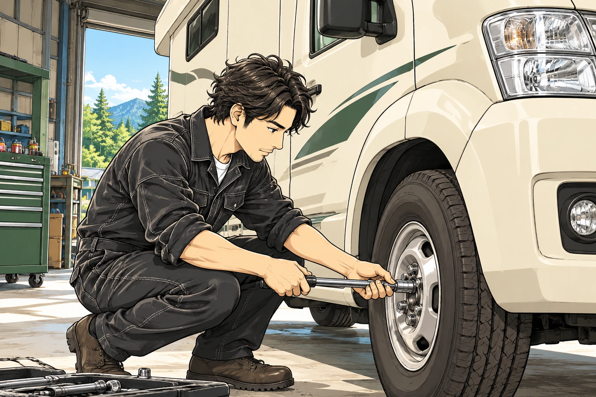
旅する愛車の、かかりつけ。
キャンピングカー修理
直して、整えて。
また、旅に出よう。
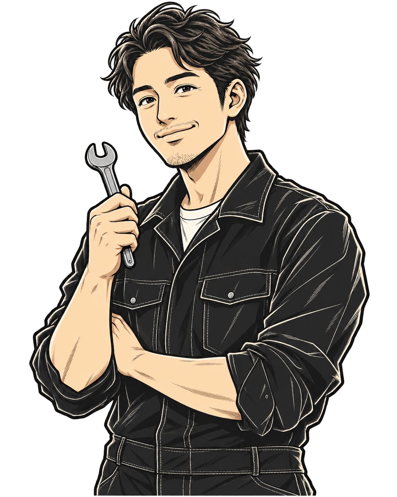
千葉県君津市次の旅の前に、
愛車のことで
気になっていませんか？
愛車の悩みに、整備でこたえる。
直して、整えて。
また、旅に出よう。
また、旅に出よう。
01
修理・メンテナンス
不調を見つけて、次の旅へ。
電装の不調、足回りの異音、消耗品の確認。気になる症状から、旅行前の点検までご相談ください。
相談前に確認すること ＋
症状が出る場面、車種・年式、架装メーカーをお知らせください。車両の状態や部品の供給状況を確認し、対応内容をご案内します。
この内容をLINEで相談する ↗02
電装・バッテリー
旅の電気を、使い方から考える。
リチウムバッテリーへの換装や電装設備の見直し。現在の設備と、旅先での使い方から考えます。
相談前に確認すること ＋
現在のバッテリー、充電器、インバーターなどの情報と、使いたい家電をお知らせください。設備の組み合わせを確認します。
この内容をLINEで相談する ↗03
ソーラー・充電システム
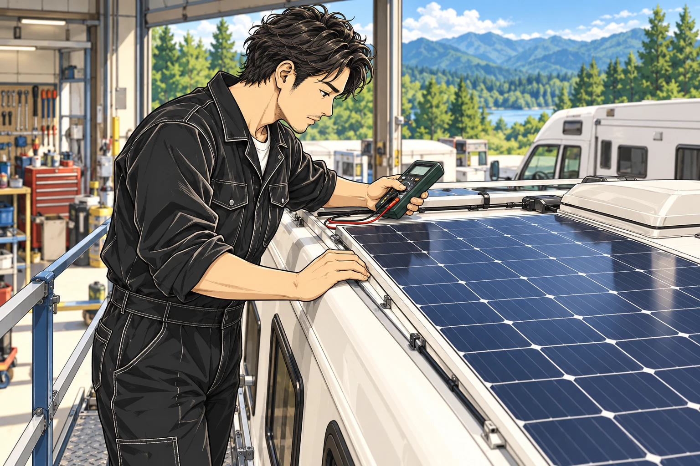
充電の選択肢を、もっと。
ソーラーパネルの取付や充電システムの相談。車両と既存の設備に合わせて内容を確認します。
相談前に確認すること ＋
車種、ルーフの状態、既存のソーラー・充電設備が分かる情報をご用意ください。取付方法や対応範囲をご相談します。
この内容をLINEで相談する ↗04
FFヒーター
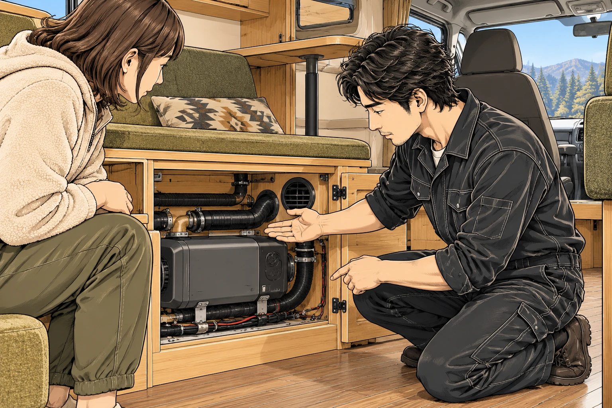
車内の時間を、あたたかく。
FFヒーターの取付や、お使いの設備についての相談。車中泊の過ごし方もお聞かせください。
相談前に確認すること ＋
現在お使いの製品名や型番、設置場所が分かる写真、ご希望をお知らせください。車両に合わせて対応を確認します。
この内容をLINEで相談する ↗05
部品取付・カスタム
あなたの旅に、使いやすさを。
購入したパーツの取付や、車内の使い勝手の見直し。希望する仕様や使い方からご相談いただけます。
相談前に確認すること ＋
部品のメーカー・型番・商品情報・付属品をお知らせください。車両との適合や取付可否を確認します。
この内容をLINEで相談する ↗06
レッカー・搬送
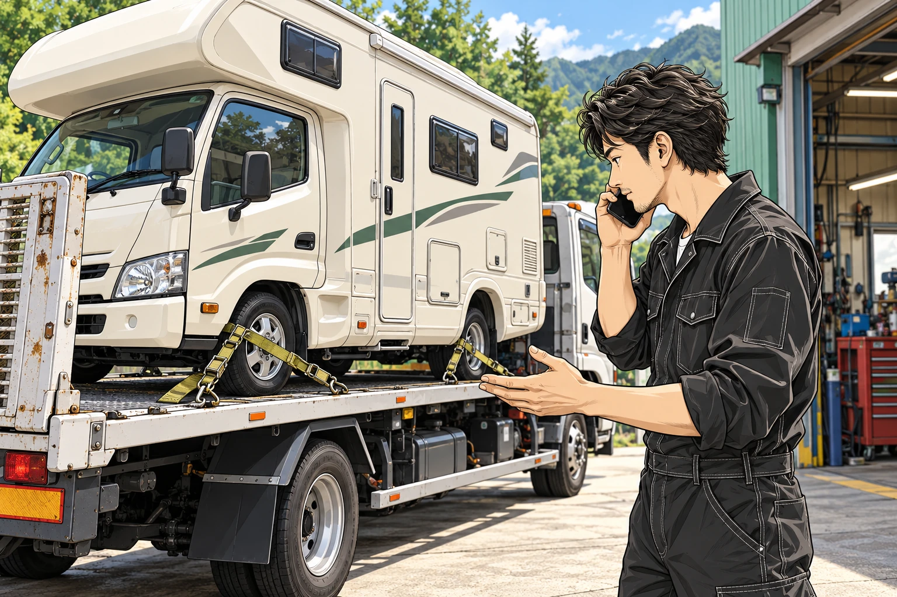
動かせないときも、相談から。
搬送が必要な場合は、車両と現在の状況をお電話でお知らせください。対応できる内容を確認します。
相談前に確認すること ＋
現在地、車種、車両サイズ、走行できるかどうかをお知らせください。対応の可否・費用・日程は状況を伺ってご案内します。
この内容をLINEで相談する ↗※漫画はサービスのイメージです。対応内容は車両・設備の状態を確認してご案内します。
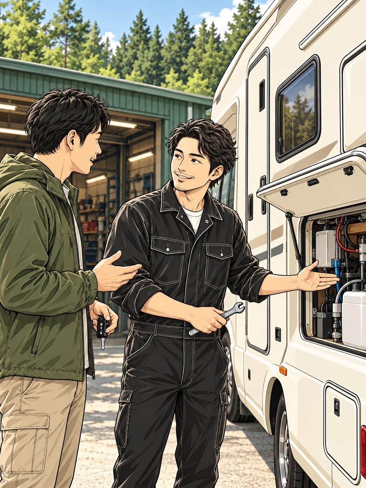
旅のことも。
旅するクルマを知る、相談できる整備工場。
キャンピングカービルダーで10年勤務したメカニックと、
クルマの仕事に30年携わってきたパートナー。
二人の経験を持ち寄り、愛車の「気になる」に向き合います。
メカニックの経験
10年
キャンピングカービルダー勤務歴
パートナーの経験
30年
自動車業界での経験
愛車と、これからの旅のために。
-
認証工場
状態確認
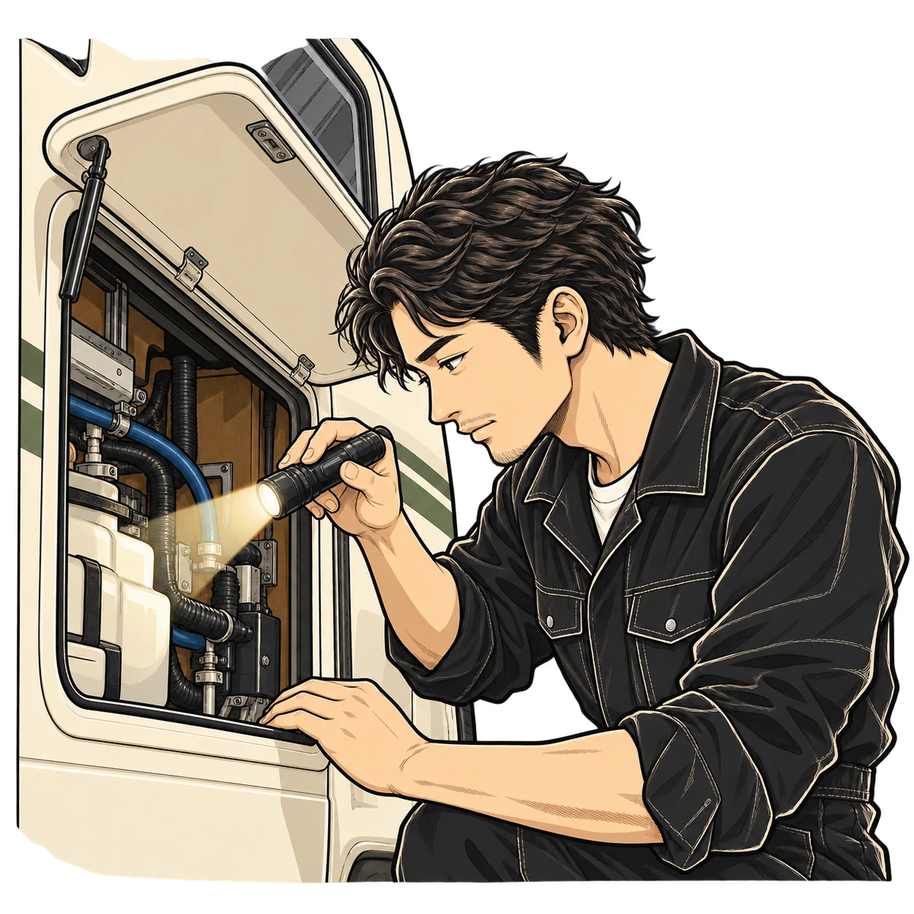
修理も点検も、車両・設備の確認から。
気になる症状を一つずつ確認します。関東運輸局長認証
自動車特定整備事業 第3-5923号 -
旅に合う整備
整備提案
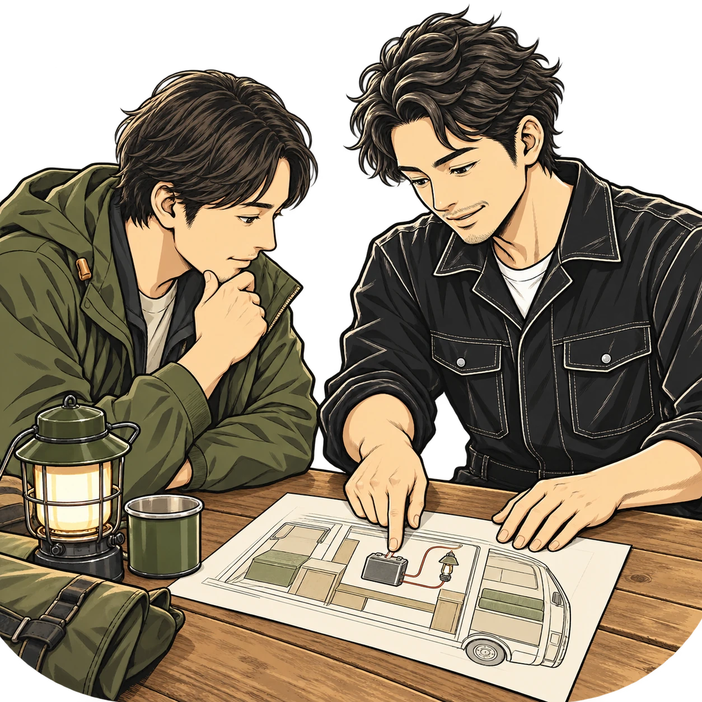
キャンピングカービルダーでの経験を活かして。
車内の過ごし方から、整備をご案内します。 -
納得してから
事前相談
作業範囲と日程を、事前にお話しします。
ご確認いただいてから、作業を進めます。
イラストは整備・相談・旅のイメージです。
ご相談の流れ
気になることから、
次の旅へ。
愛車のこと、旅のこと。まずは聞かせてください。
ご相談からお引き渡しまで、一緒に進めていきます。
1写真でご相談
車種・年式・気になる症状やご希望を、LINEやお電話でお知らせください。
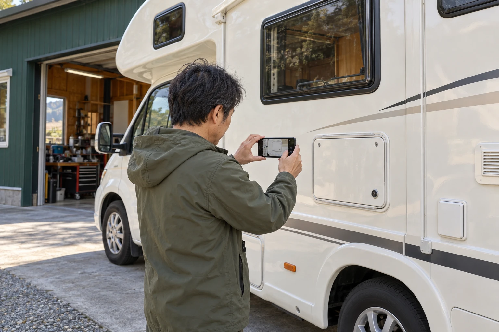
聞かせてください！
症状が分かる写真があるとスムーズです。
詳しいことが分からなくても、お気軽にご相談ください。
2状態を確認
車両や設備の状態、ご希望を確認。必要に応じて、ご来店の日程をご案内します。
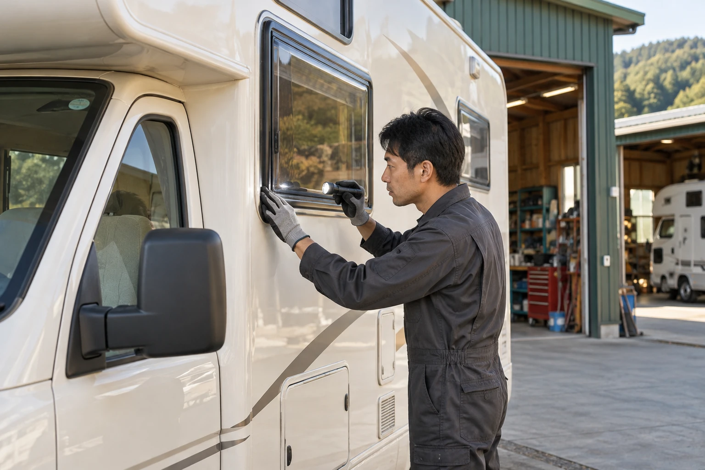
一つずつ確認します。
「どんな時に起きるか」「どう使いたいか」も大切な手がかり。
お話を伺いながら、必要な確認を進めます。
3内容・費用の
ご案内
作業内容・費用・日程をご説明。内容をご確認いただいてから、作業を進めます。
ご案内
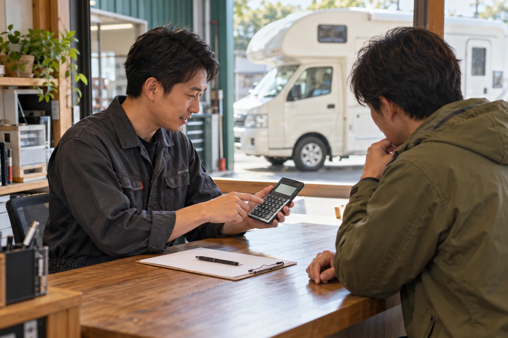
作業の前に相談しましょう。
直したいところ、取り付けたいもの、これからの旅。
ご希望と車両の状態に合わせて、作業内容をご案内します。
4整備・お引き渡し
ご確認いただいた内容に沿って整備。仕上がりや使い方を確認し、お引き渡しします。
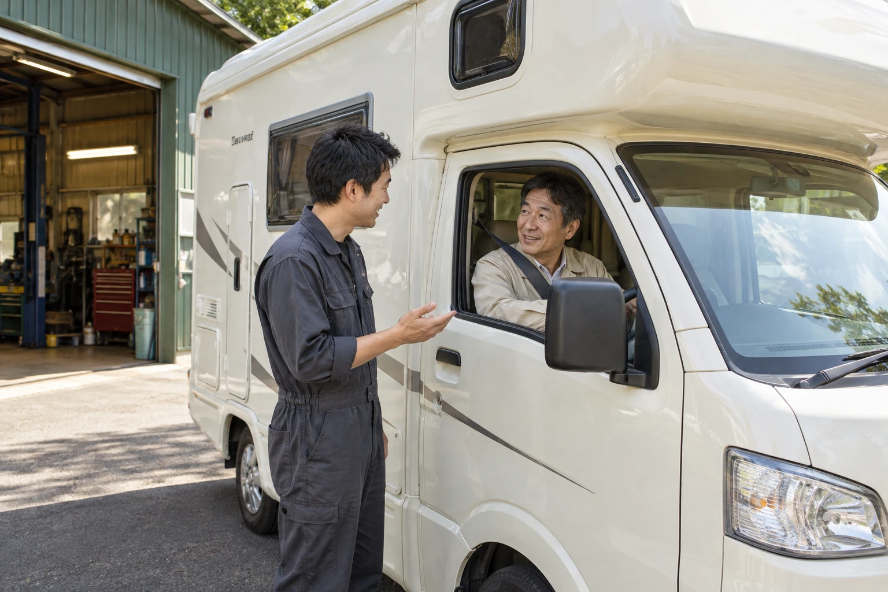
また、旅に出よう。
作業した箇所や設備の使い方を、一緒に確認。
次の旅を楽しめるよう、愛車を整えます。
費用・期間は、車両の状態・作業範囲・部品の準備状況によって異なります。
画像はご相談の流れを説明するために生成したイメージです。
よくある質問
キャンピングカーのこと、
整備のこと。
よくあるご質問をまとめました。
お答えします！
Q.他店で購入した車も相談できますか？＋
まずは車種・架装メーカー・年式と、ご希望の作業をお知らせください。車両の状態や部品の供給状況を含め、対応できる内容を確認します。
Q.購入したパーツを持ち込めますか？＋
持込部品の取付をご相談いただけます。メーカー・型番・商品情報・付属品を事前にお知らせください。適合や取付可否を確認します。
Q.料金や整備期間はどれくらいですか？＋
車両の状態、作業内容、部品の準備、予約状況により異なります。ご希望の日程を伺い、作業範囲や費用を確認してご案内します。
Q.そのまま工場へ行っても大丈夫ですか？＋
ご来店前にお電話またはLINEでご相談ください。車両とご相談内容を事前に伺います。大型車の進入経路や駐車についてもご確認ください。
RV BASE Lab
- 所在地
- 〒292-0455
千葉県君津市俵田729-3 - 電話番号
- 050-5585-9522
- 営業時間
- 24時間営業・定休日なしご来店前にご相談ください。受付・対応状況はお問い合わせください。
- 認証番号
- 関東運輸局長認証
自動車特定整備事業 第3-5923号
次の旅の前に、
愛車の気になることを。
症状がうまく説明できなくても大丈夫。
まずは、分かるところからお聞かせください。